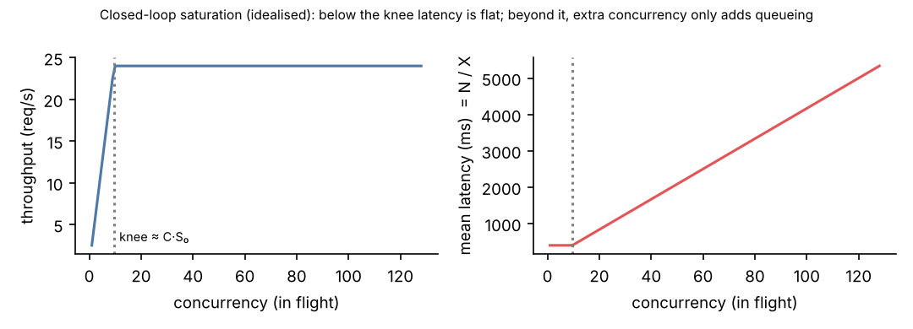
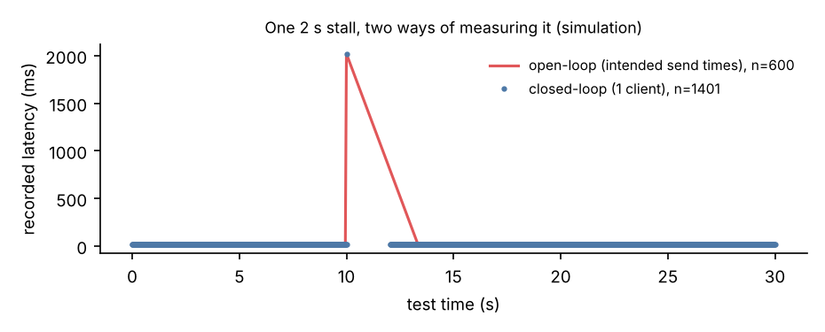

Fairness: aggregate wins can hide group-level losses
speaker
Non-speech (silence, music, hold, DTMF)
Hallucination
flags no_speech, music
Report the count of segments and words in each slice and flag slices below a minimum size as "indicative only". A fairness-relevant slice that is too small to test should trigger more data collection, not a shrug.
7.2 Hallucination and non-speech tests
A hallucination audit of Whisper found roughly 1% of sampled transcriptions contained hallucinated content, with 38% of those containing explicit harms such as invented violence or false authority; silences at the start/end of recordings and long non-vocal stretches appeared to trigger it, and the other commercial systems audited did not show the effect. verified A separate study reported near-100% hallucination for Whisper-large-v3 on non-speech audio against 13.52% for a Conformer-CTC model preprint, secondary summary. The magnitude is test-dependent; the direction is not. Therefore:
Include a non-speech battery in every evaluation: pure silence (various lengths), room tone, music, hold tones, DTMF, breathing/cough, TV in background, leading/trailing silence around real speech.
Metric: hallucination rate = share of non-speech segments where the output has more than a trivial number of tokens, with a Wilson interval; plus the content of hallucinations (reviewed manually: a loop of "thank you" is benign, an invented clinical statement is not).
Models with an explicit no-speech signal (Jais-ASR's model card states that it says so instead of inventing text, and the Mizan adapter maps its sentinel token) are easier to gate; but verify the claim on your non-speech battery. vendor-reported
Mitigations to evaluate as configuration changes, each re-tested (§8): VAD pre-filtering before ASR; disabling conditioning on previous text (community reports and one preprint show it can cause runaway error propagation in long-form decoding); a volume/energy gate for near-silence; log-probability and compression-ratio filters; repetition controls; phrase blocklists as a last resort. community None of these is free: VAD can clip quiet speech (deletions) and disabling conditioning loses context.
7.3 Other failure-mode probes
Repetition loops: detect with an n-gram repeat ratio on hypotheses; track the insertion rate, and the maximum per-segment WER.
Language-ID failures: Arabic audio transcribed or translated into English; English phrases turned into Arabic nonsense. Detect with script-ratio checks between reference and hypothesis.
Truncation and dropped tails: compare hypothesis length to reference length; track deletion rate and "ends early" cases at segment boundaries and for long inputs.
Perturbation tests: speed ±10%, additive noise at fixed SNR, codec re-encoding (8 kHz telephone), volume changes. Large deltas reveal fragile systems; report the delta, not just the absolute number.
Determinism: run the same input several times; at temperature 0 a stable engine should return identical text. Report the fraction of segments whose output changes between runs.
8. Inference engines: what changes when you change the runtime
An engine is not a neutral container. It determines which decoding features exist, how long audio is chunked, what precision kernels run, how requests are batched and therefore both speed and, sometimes, the text produced. The only safe assumption is: if you change the engine, re-run the accuracy evaluation.
8.1 Landscape
Engine / runtime
What is established
Implications for evaluation
vLLM (OpenAI-compatible server)
Exposes a Transcriptions API compatible with OpenAI's (the OpenAI Python client works against it); audio extras installed with vllm[audio]; accepts common formats (FLAC, MP3, MP4, MPEG, MPGA, M4A, OGG, WAV, WEBM); default upload limit 25 MB via VLLM_MAX_AUDIO_CLIP_FILESIZE_MB; Whisper is the reference encoder-decoder implementation; other models integrate through a SupportsTranscription interface. verified (docs) Its PagedAttention / continuous batching design raised LLM serving throughput 2–4× at similar latency versus FasterTransformer and Orca in the original paper. verified (paper; LLM workloads)
Excellent for many concurrent requests on one GPU; throughput depends on --max-num-seqs and memory; model support is per version — check the supported-models page for your exact release. The 2–4× figure is for LLM text generation: do not assume it for audio encoder-decoder workloads; measure.
faster-whisper (CTranslate2)
Reimplementation of Whisper on CTranslate2. Its README reports, for 13 minutes of audio on an RTX 3070 Ti, 2m23s for openai/whisper (fp16, beam 5) vs 1m03s for faster-whisper sequential and 17 s with batch size 8 (batched mode up to 10–12× faster than OpenAI's implementation and 3–4× faster than sequential). Batched mode transcribes VAD-defined chunks and ignores some options (e.g. compression and no-speech thresholds, condition_on_previous_text). vendor-reported
Strong single-GPU Whisper throughput. Because batched mode changes chunking and drops options, its accuracy is a different system from sequential mode: evaluate the exact mode you will deploy. Self-reported benchmarks used consumer hardware; re-measure on yours.
Hugging Face Transformers pipelines
Reference implementations for many models, including those whose serving plugins lag (custom-code ASR models). practice
Good as an accuracy oracle for equivalence testing; rarely the best throughput option.
whisper.cpp / on-device runtimes
C/C++ ports and quantized formats for CPU/edge. practice
Quantization effects are larger on hard slices; evaluate per slice. Not a candidate for GPU-server throughput.
NVIDIA stacks (NeMo, Riva, TensorRT-LLM, Triton)
Vendor toolchains for CTC/TDT/Conformer models and optimized deployment. The Open ASR Leaderboard reports CTC and TDT decoders give superior RTFx while Conformer encoder + transformer decoder gave the best average WER. verified (leaderboard paper)
If throughput dominates your decision, evaluate this family; if Arabic/English code-switching accuracy dominates, check what public Arabic leaderboards and your gold set say.
Hosted APIs (cloud ASR)
No infrastructure; data leaves your environment. practice
Flag as external; apply privacy/legal gates first (§11); versions can change without notice, so pin dates and re-run evaluation on a schedule.
8.2 Decoding and pipeline parameters that change accuracy
Parameter
Effect
Evaluate
Beam size / sampling temperature, temperature fallback
Quality vs speed; fallback can rescue or randomize
WER, determinism, latency tail
Language forcing / language hint
Prevents mis-ID; for code-switching a forced ar may suppress English segments or the reverse
mixed and en slices, English-term preservation
VAD pre-segmentation (threshold, min-silence)
Removes silence hallucination; can clip soft speech
Hallucination rate and deletion rate
condition_on_previous_text
Context gain vs error propagation in long-form
Long-form track WER, loops
Repetition penalty / no-repeat n-gram
Suppresses loops; can block legitimate repetition (numbers, "نعم نعم")
Insertion rate vs deletion rate
Prompting / hotwords / lexicon biasing
Improves rare terms; can bias or leak text into outputs
Entity-token error rate; non-speech battery
Chunk length and overlap, stitching rule
Boundary errors and duplicate words at joins
Long-form file-level WER; duplicates at boundaries
Load grid; spot-check accuracy at the chosen setting
8.3 Same weights on a different engine: the equivalence test
Pick the reference engine (the most faithful implementation, often the model author's) and the candidate engine; load identical weights and dtype where possible.
Run both on the full gold set and the non-speech battery with identical decoding settings.
Report: (a) paired WER difference with the 90% interval vs ±δ; (b) output agreement: fraction of segments with identical normalized text, and agreement WER between the two engines' outputs (Mizan's agreement mode — labelled as disagreement, never as accuracy); (c) per-slice differences; (d) the top-N most-divergent segments for manual review (Mizan's disagreement explorer).
Expect not bit-identical text: different kernels, fused ops and batch compositions produce tiny numerical differences that occasionally flip a token. A small, unbiased, slice-uniform disagreement is acceptable; a systematic shift on one slice (e.g. numbers, English words, long segments) is a configuration or implementation difference to chase.
If the engines should differ (different chunking), the comparison is no longer an equivalence test; treat the whole pipeline as the candidate (§2).
8.4 Long-form and chunking
Segment-level scoring assumes someone already cut the audio. In production, the engine often does the cutting (30-second windows, VAD chunks, overlap, stitching) and that is where duplicates, dropped boundaries and context errors arise. The Open ASR Leaderboard paper itself extended its scope to long-form evaluation for this reason. verified (title/scope) Maintain a small set of full recordings with complete references and evaluate the file-level WER, boundary duplicates and wall-clock time per candidate pipeline, in addition to the segment-level gold-set run.
8.5 Engine-level checklist
Pin versions: engine, model revision/commit, tokenizer, CUDA/driver, plugin versions. Record them in the run's resolved configuration (Mizan does).
Run a smoke test on every run start (health + one segment) so adapter or API drift fails fast.
Check payload and length limits (e.g. 25 MB default in vLLM; maximum segment seconds recommended by the model) against your real inputs.
Check error semantics: which failures are retryable (timeouts, 5xx) vs permanent (400)? Count them — an engine that returns empty strings instead of errors silently degrades accuracy.
Check resource behaviour: GPU memory footprint (weights, KV/cache, batch), warm-up/compile time, behaviour at OOM.
latency (per request) = wall time from send to final transcript, in ms
RTFx (inverse real-time factor) = total audio duration / total processing time (higher is faster)
sequential-equivalent RTFx = Σ audio_s / Σ per-request wall_s
observed (parallel) RTFx = Σ audio_s completed in a step / step duration
throughput = completed requests per second (and audio-seconds per second)
error rate = failed requests / total requests (by class: timeout, 5xx, 4xx, malformed)
cost per audio hour = GPU $/hour ÷ (sustained RTFx × target utilisation)
RTFx as used by the Open ASR Leaderboard is the audio duration divided by transcription time. verified Always say whether a quoted RTFx is single-stream or at a given concurrency, which hardware, which batch size, and which audio length mix: the same engine can differ by an order of magnitude across these.
9.2 Throughput versus latency: the saturation knee
For a closed-loop test with N clients each keeping one request in flight, Little's law gives N = X · W (in-flight = throughput × mean latency). Below the engine's capacity, throughput rises with N and latency stays near the unloaded service time; once capacity is reached, throughput flattens and additional concurrency only adds queueing delay:

Figure 2. Idealised closed-loop behaviour (service time 0.40 s, capacity 24 req/s). Real engines show a rounded knee and tail latency rising earlier than the mean. Model for intuition only.
Find the knee, not the peak. Operate at the highest concurrency where p95/p99 still meet the SLO and the error rate is within budget (Mizan flags saturation at the first step where p95 grows > 2× the previous step or errors exceed 1%).
Capacity planning: servers needed = peak audio-seconds per second ÷ (sustained RTFx at SLO × utilisation target). Example (illustrative inputs): 10 hours of audio arriving per hour at peak is 10 audio-seconds per second; at a sustained 150× RTFx and a 60% utilisation ceiling, 10 ÷ (150 × 0.6) = 0.11 → one server suffices with large headroom; the binding constraint becomes p99 latency and failover, not throughput.
Mix matters: use the real distribution of segment lengths (Mizan: length-bucket weights). Short-segment traffic stresses per-request overhead; long segments stress the encoder and memory.
9.3 Closed-loop versus open-loop load, and coordinated omission
Gil Tene named coordinated omission: if a load generator waits for each response before sending the next request, a stall also pauses the sending, so the requests that would have been sent during the stall never exist and their (long) latencies are never recorded. The recorded distribution then looks far healthier than what real, independently arriving users experience. Recommended remedies are open-loop generators with a fixed arrival schedule (measuring latency from the intended send time), or correcting recorded values (HdrHistogram's correction mode), and reporting the full percentile spectrum rather than averages (percentiles cannot be averaged across runs or machines). verified (secondary write-ups of the original posts)

Figure 3. Simulation of one 2-second stall at t = 10 s. Service time 20 ms; open-loop schedule 20 requests/s (40% utilisation) versus a single closed-loop client. Closed loop: 1,401 samples, p50 = 20 ms, p99 = 20 ms, max 2,020 ms. Open loop: 600 samples, p50 = 20 ms, p99 = 1,840 ms, p99.9 = 2,002 ms.
What this means for the numbers you collect
A closed-loop concurrency ramp (N clients, each in a loop) answers "how does the system behave with N concurrent callers and where does it saturate?". That is the right model for a worker pool that submits jobs as fast as results return (batch transcription).
For services with independent arrivals (call-centre streams, user uploads), p99 under a closed-loop generator can be materially optimistic near and beyond the knee. Use an open-loop (arrival-rate) test, or at least treat closed-loop p99 as a lower bound.
Mizan's current load generator is closed-loop (see §13). It is the correct tool for the saturation/RTFx curve; its tail percentiles should be read with this caveat.
9.4 Load-test hygiene
Warm up (model load, kernel autotune/compile, cache fill) and discard the warm-up; test steady state for long enough to include periodic effects (GC, thermal throttling, batch-scheduler cycles).
Sample size for tails: a p99 estimate needs hundreds to thousands of samples per step (rule of thumb: at least ~10× 1/(1−q) — 1,000 samples for p99, 10,000 for p99.9). Short steps at low concurrency produce meaningless p99.
Same hardware, data and generator for every candidate; randomize or interleave run order; repeat at least three times and report the spread. Shared GPUs or noisy neighbours invalidate comparisons.
Guardrails: per-request timeout, abort a step above an error ceiling (Mizan: 20%), cap at the endpoint's declared maximum concurrency, schedule heavy tests outside production windows.
Record telemetry (GPU utilisation, memory, temperature, power at 1 Hz) and join it to steps: saturation with 40% GPU utilisation means the bottleneck is elsewhere (CPU pre-processing, network, scheduler).
Break out error classes (timeouts, 5xx, 4xx). A "fast" engine that sheds load with errors has not saturated gracefully.
Cold start and failover: measure time from container start to first successful transcript; this bounds autoscaling responsiveness.
Re-check accuracy at the load you chose: some stacks change results under different batch compositions; spot-check a gold subset while loaded.
10. The swap protocol: from candidate to production
10.1 Step by step
Define. Write the decision ("replace A with B for Arabic+English call audio"), the margin δ, critical slices, SLOs (p95/p99 at target concurrency, error budget), and hard constraints (data residency, licence, hardware, maximum cost per audio hour). Agree them before running anything.
Freeze data. Gold v1 (stratified, reviewed, with non-speech and a long-form track), a locked test partition, the human noise floor from blind double annotation, and the normalizer version.
Baseline the incumbent with the exact production configuration: accuracy with intervals, slice table, hallucination battery, and its load curve. Without a baseline measured under the same harness, "better" has no meaning.
Define the candidate grid. For each candidate model: engine(s) and decoding configuration(s) you would really deploy; add the incumbent's pre/post-processing as a control. Keep the grid small and pre-declared to avoid selection bias.
Accuracy gates on the locked test set: non-inferiority overall and per critical slice; safety bounds (hallucination, deletion, insertion/loops); no regression on number/entity tokens. Inspect the top disagreement segments manually.
Load. Concurrency ramp on the same adapter and data; find the knee; verify error classes; compute sustained RTFx and cost per audio hour; repeat ≥ 3 times; use open-loop tests where independent arrivals matter (§9.3). Re-check accuracy on a gold subset at the chosen concurrency.
Score and stress the decision. Apply gates, rank survivors with the weighted matrix (§11), then perturb weights to see whether the ranking is stable.
Shadow. Send a copy of live traffic to the candidate without affecting users. You do not have gold labels, so use (a) agreement with the incumbent per slice (disagreement should look like the gold-set difference), (b) a stratified sample reviewed by humans, (c) operational metrics (latency, errors, empty-output rate, length ratio vs incumbent), (d) drift of input distribution vs gold-set strata.
Canary. Gradual ramp (e.g. 1% → 10% → 50% → 100%) with pre-agreed rollback triggers: error rate above X, p99 above Y, empty-output rate above Z, human-sampled WER above W, any hallucination incident of a defined severity. Keep the incumbent warm until the end of the observation window.
Record. Store the decision memo (§11.3), the resolved configuration of every run (adapter version, model revision, normalizer rules, metric versions, options), the gold-set version and seeds. Schedule re-evaluation: on any engine/model/driver upgrade and at least quarterly.
10.2 Illustrative acceptance criteria (set your own)
Criterion
Example threshold
Test
Overall accuracy
upper95%(WERC − WERI) < 0.5 pp
Paired cluster bootstrap on locked test
Critical slices
same bound < 1.0 pp for mixed, dialect X, <5 s, noisy
Per-slice paired bootstrap, with n shown
Dropped speech
deletion rate not worse by > 0.3 pp
Paired bootstrap on D/N
Hallucination
upper Wilson bound on non-speech battery ≤ 2%
≥ 200 non-speech segments
Loops
no segment with insertion rate > 100%; insertion rate not worse
Max per-segment WER, loop detector
Latency
p95 < 2 s and p99 < 4 s at target concurrency, 3 repeats
Closed- and open-loop tests
Errors
< 0.5% at target concurrency; no timeouts
Load test error classes
Capacity
Sustained RTFx covers 2× peak with 40% headroom
Capacity formula (§9.2)
Constraints
No external data egress; licence permits intended use; fits the GPUs
Gate review
All thresholds above are placeholders to illustrate the form of a criterion, not recommendations.